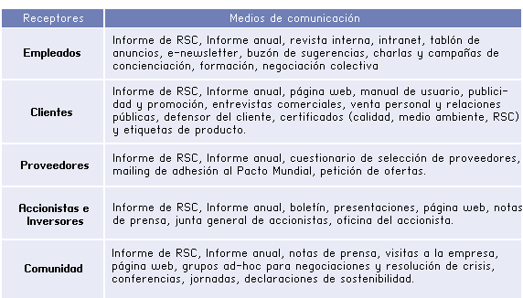
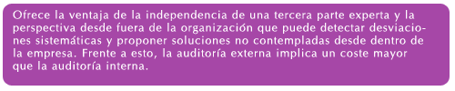

9.- la gestión e implementación de loa RSC
9.1.- el compromiso: liderazgo ético, misión y valores de la empresa
La RSC tiene su origen en un compromiso voluntariamente asumido por la empresa. Es un compromiso estratégico, esto es, a largo plazo y global, y que condiciona la conducta y la cultura de la empresa.
Al ser una decisión estratégica, la Alta Dirección debe determinar el contenido y alcance del compromiso social y ambiental de la empresa, siendo esta tarea la primera que debe realizarse y sobre la que se construye las estrategias y prácticas de la empresa responsable.
Debe ser un compromiso que rompe con lo momentáneo y parcial para ser un compromiso auténtico que se proyecta en el futuro de la empresa y que influye en las decisiones de la organización. Por tanto, el compromiso es una decisión interna de la empresa, fruto de una reflexión sobre la responsabilidad que la empresa tiene y sobre los agentes ante los que es responsable. El compromiso responsable nace del interior de la propia empresa, debe ser compartido por todos y cada uno de los empleados de la organización y debe comunicarse a las partes interesadas de la organización.
El líder de la empresa socialmente responsable sabe que la gestión ética de la empresa es la mejor gestión posible no sólo desde el punto de vista moral sino también desde el punto de vista técnico, pues proporciona la legitimidad necesaria para la toma de decisiones y que estas sean compartidas por todos los integrantes de la organización.
La misión y la visión deben estar integradas y ser coherentes y compatibles entre sí. Para evitar que la empresa se quede en una mera declaración debe existir un concordancia clara entre la visión y el comportamiento cotidiano de la empresa. Por último, y a medida que la empresa y el entorno se van transformando, la organización debe revisar periódicamente su misión y visión para asegurar que se corresponde con los valores con los que se dirige la empresa.
9.2.- la política empresarial y el sistema de objetivos de la RSC: objetivos, resultados y metas.
| La empresa institucionaliza y documenta públicamente su compromiso social y ambiental en la Política Empresarial de RSC, que es una Declaración de Principios de la organización que relaciona su desempeño económico, social y ambiental. Las políticas empresariales de RSC son fruto del desarrollo natural de las políticas de calidad y medio ambiente y de la madurez y experiencia probada de los Sistemas de Gestión de Calidad y Gestión Medioambiental. |
| Aunque cada empresa debe elaborar su propia Política de RSC, es oportuno que la política haga referencia a algunas cuestiones básicas: |
La política de RSC debe ser pública, formulada por la Alta Dirección, y proporcionar un marco para la acción y el establecimiento de objetivos.No es conveniente una generalización de las Políticas de RSC.
Conviene seguir un proceso estructurado para desarrollar una Política de RSC:
Una de las mejores formas de asumir un compromiso con RSC es integrar consideraciones sociales y ambientales en el sistema de objetivos de la empresa.
Una de las mejores formas de asumir un compromiso con RSC es integrar consideraciones sociales y ambientales en el sistema de objetivos de la empresa.
Los objetivos de RSC son fines de carácter general coherentes con la política empresarial general y en particular con la de RSC.
Los objetivos deben reunir una serie de características:
9.3.- el compromiso de la empresa con la sociedad: declaraciones de RSC
La empresa puede declarar su compromiso con la sociedad mediante la adhesión o asunción de los convenios, tratados y declaraciones relativos a la RSC. |
| En los últimos años han proliferado este tipo de iniciativas, siendo el Pacto Mundial de las Naciones Unidas la más relevante por su alcance y aceptación internacional y la Carta de Cámara Internacional de Comercio para el Desarrollo Sostenible y las Directrices de la OCDE para empresas multinacionales. |
El Pacto Mundial de la ONU tiene una serie de Principios Fundamentales de implantación que son los siguientes: |
9.4.- diagnóstico y planificaión de la RSC
Una vez la empresa ha determinado su fin último y su compromiso social y ambiental, necesita conocer su situación actual, el punto de partida desde el que tiene que emprender el camino hacia la excelencia.
Este diagnóstico es doble: por un lado, del entorno de la empresa, y por otro, de la propia organización. Efectivamente, los dos elementos esenciales del análisis empresarial son:
La empresa comenzará a trabajar en su compromiso en el análisis externo, este análisis comprende:
La herramienta de gestión más utilizada en el análisis externo es el mapa de stakeholders o grupos de interés. También es útil realizar un benchmarking de las mejores prácticas de la competencia.
Los aspectos de RSC deben evaluarse para determinar una prioridad en función de su nivel de significación. La magnitud del impacto, la frecuencia o la capacidad de control son criterios que se utilizan frecuentemente para clasificar los aspectos.
Una vez realizado el análisis externo la empresa se centrará en el análisis interno. El análisis interno consiste en un diagnóstico de, por una parte, las actuales prácticas de RSC de la empresa y, por otra, de los valores, recursos y capacidades con los que cuenta la empresa para gestionarse de una manera sostenible.
Otro aspecto esencial del análisis interno es el análisis de los riesgos sociales, ambientales y de la reputación de la organización.
El proceso de análisis de estos riesgos incluye la identificación de las fuentes de riesgo, la estimación del riesgo, la valoración del riesgo, y finalmente su gestión.
9.5.- la implantación: estructura organizativa.
La implantación de la RSC exige un soporte organizativo que asegure que se llevan a cabo las tareas planificadas y se cumplen los objetivos fijados. Por tanto, la Dirección debe definir las funciones, responsabilidad y autoridad de los responsables de la gestión de la RSC.
La empresa puede optar entre varias soluciones en función de sus necesidades y características. Es usual que un departamento actual de la empresa asuma estas funciones. Departamentos como los de Calidad, Medio Ambiente o Comunicación suelen ser los elegidos. Otra opción es crear un departamento de RSC o nombrar un coordinador. Estos son modelos organizativos centralizados que tienen su alternativo en los modelos descentralizados (puros o mixtos).
Además de esto, la empresa puede fortalecer la estructura organizativa de la RSC nombrando un Consejero del Consejo de Administración responsable de esta materia o una Comisión Delegada del Consejo, y creando un Comité de RSC formado por directivos de las áreas de la empresa más implicadas en estas cuestiones.
Desde esta perspectiva el Sistema de Gestión de la RSC es un sistema documentado, por lo que la empresa deberá desarrollar los documentos pertinentes que faciliten la implantación de la RSC. La documentación básica del sistema está formada por:
La cultura empresarial que genera todos estos documentos facilita que la organización actué mediante el conjunto de normas, valores y formas de pensar que caracterizan la conducta de los miembros de la organización en todos los niveles de la empresa, así como en la propia presentación de la imagen de la empresa.
El objetivo de la cultura empresarial es definir qué valores y normas generales son los que definen la empresa y definir espacios éticos de actuación libre y responsable con los que conseguir la capacidad de innovación, imaginación y flexibilidad que un mercado diferenciado y complejo exige. Este conjunto de valores constituyen una herramienta fundamental para la toma de decisiones en la empresa y la solución de dilemas, a la vez que permiten construir relaciones de confianza con las partes interesadas.
Entre otros valores característicos de la empresa responsable están la integridad, la honestidad, el compromiso, la lealtad o el respeto a los demás. Sin embargo, la empresa debe elaborar una cultura que responda a su carácter propio, para lo que es preciso un diagnóstico del modo en el que la empresa actúa y por el que desea ser reconocida.
El Código Ético es el documento que establece las reglas y principios que definen el comportamiento de la organización y que, por tanto, configuran el marco normativo y los criterios que determinan lo que es correcto o no.
Aunque suele haber códigos éticos sectoriales que la empresa puede asumir, cada organización debe redactar su Código Ético en el que explicite y comunique su carácter propio que la identifica y diferencia de otras empresas. El Código Ético es una presentación ante todas las partes interesadas de la conducta de la empresa.
La institucionalización del Código Ético facilita la transparencia que es una de las características distintivas de la empresa responsable que, asumiendo su responsabilidad con las partes interesadas, desarrolla una potente actividad de comunicación informando de sus actividades y de los impactos de las mismas e interactuando con su entorno escuchando las demandas y expectativas de sus interlocutores.
El código ético cumple las siguientes funciones:
No existe una estructura ni reglas fijas ni una única fórmula para la elaboración de un Código Ético. La estructura y contenido del código deben adaptarse a las características de cada empresa y a las de su entorno.
El diálogo abierto y sincero con las partes interesadas, la transparencia de las organizaciones empresariales, ofrece una serie de ventajas a las empresa:
- Responde a la demanda de información de los GI.
- Aumenta el conocimiento del entorno.
- Mejora la reputación de la empresa.
- Demuestra una actitud proactiva.
- Facilita la gestión de las crisis.
- Mejora la posición competitiva de la empresa.
- Estimula la mejora del sistema de comunicación.
La comunicación responsable tiene las siguientes características que son ineludibles: veraz, accesible, comprensible, relevante, oportuna, comparable, creíble, respetuosa, bidireccional, completa, continua y contrastable.
La empresa puede realizar varios tipos de comunicación, entre los que destacan:
En todo caso, la empresa debe elaborar un plan de comunicación social y ambiental que incluya el conjunto de receptores, tipos y acciones de comunicación debidamente ordenados y organizados. El plan abarca la comunicación interna y externa.

| La herramienta de comunicación que más desarrollo está experimentando es la Memoria o informe de RSC, informe de carácter voluntario que realizan las empresas comprometidas con la RSC atendiendo a la triple cuenta de resultados: económica, ambiental y social. |
| Para garantizar la uniformidad de los Informes de RSC se han desarrollado una serie de estándares que establecen los principios y el contenido para la elaboración de los informes. El estándar más aceptado es el Global Reporting Initiative (GRI). El GRI fue constituido en 1997 como una iniciativa conjunta de la organización no gubernamental estadounidense CERES (Coalition for Environmentally Responsable Economies) y el PNUMA (Programa de las Naciones Unidas para el Medio Ambiente), con el objetivo de fomentar la calidad, el rigor y la utilidad de las memorias de RSC. |
| Las Memorias o informes de sostenibilidad Social Corporativa deben elaborarse en base a unos principios básicos: |
El Global Reporting Initiative. GRI propone la siguiente estructura para el contenido del Informe de RSC:
Visión y estrategia |
Perfil de la organización |
Estructura de gobierno y sistemas de gestión |
Índice |
Indicadores de desempeño |
Los elementos básicos y comunes de la implantación de la RSC, tienen su continuidad en la implantación funcional de la RSC y son los siquientes:
Las funciones con mayor implicación en cuestiones de RSC deben implantar prácticas específicas para gestionar sus procesos de una manera sostenible. Algunas de las funciones más comunes en la mayoría de las empresas son la producción, la gestión de los recursos humanos, comercialización, compras y financiación.
La RSC se aplica a las operaciones de la empresa, una de las principales es la producción o prestación del servicio de su oferta comercial. La función de producción debe considerar los impactos sociales y ambientales de todos los aspectos relevantes durante el ciclo de vida de los productos, "de la cuna a la tumba", para lo cual debe tener en cuenta, entre otros, aspectos como:
La gestión de los recursos humanos es otra función esencial en las empresas. Naturalmente, aspectos básicos como el respeto de los derechos laborales son una cuestión esencial (trabajo infantil, libertad de asociación, no discriminación, ...), pero no son suficientes. Asegurados los estándares mínimos aceptados por los organismos internacionales, la empresa tiene el reto de gestionar integralmente los recursos humanos con el objetivo de atraer, desarrollar y retener el talento. En este terreno, cobran protagonismo cuestiones como:
La función comercial y las relaciones con los clientes son otra área central de la gestión de las empresas. Las cuatro P’s del marketing se ven afectadas por la RSC.
La función de compras también tiene dos aspectos clave relacionados con la RSC. El primero se centra en la integridad del proceso de compras, promoviendo la igualdad de oportunidades entre los proveedores o evitando sobornos o cualquier otra práctica inaceptable. Por otro lado, la empresa responsable extiende las buenas prácticas a los proveedores incluyendo criterios sociales y ambientales en la selección y evaluación de proveedores.
Por último, la función financiera debe considerar aspectos como:
9.6.- verificación de consecuación de objetivos y resultados.
Una vez implantada la estrategia de RSC y las acciones planificadas, la empresa debe verificar los resultados obtenidos y comprobar en qué medida se cumplen los requisitos y objetivos fijados.
Los Sistemas de Verificación y Control se componen de tres elementos básicos:
- Una estructura organizativa dividida en áreas de responsabilidad.
- Un proceso de comprobación o Proceso de Auditoria.
- Un Sistema de Información.
La verificación y control del desempeño económico, social y ambiental de la empresa exige de un sistema de información que junto con los registros financieros ofrezca, tanto en una dimensión interna como externa una información integral sobre los resultados sociales y ambientales de la empresa. El Informe de RSC es el instrumento de control fundamental, además de ser la herramienta de comunicación más potente en materia de sostenibilidad.
El proceso de control se divide en cinco etapas fundamentales:
La RSC es un proceso de mejora continua hacia la excelencia, por lo que la empresa debe auditar regularmente su desempeño social y ambiental para identificar desviaciones respecto a lo planificado e implantar medidas correctoras que impulsen esa mejora continua de la empresa.
Al igual que las auditorías financieras o de los sistemas de gestión de la calidad, medio ambiente o prevención de los riesgos laborales, la gestión socialmente responsable debe someterse a auditorías periódicas para determinar la eficacia del sistema y el grado de cumplimiento de los requisitos establecidos.
La auditoria de RSC es un instrumento de gestión en la empresa de carácter correctivo que comprende una evaluación sistemática, documentada, periódica y objetiva de la eficacia de la organización, el sistema de gestión y los procedimientos de RSC.
La auditoria de RSC es una herramienta flexible cuyo alcance está determinado por las necesidades y prioridades de cada empresa. Su realización permite conocer la situación actual de la organización, en cuanto a si se cumple o no con una correcta gestión social y ambiental, y con la legislación y requisitos, así como facilitar la búsqueda de soluciones en los casos en que no se cumpla. La auditoría de RSC puede ser interna o externa.
La auditoría externa:

Para garantizar la independencia y eficacia de la auditoría, deben aplicarse una serie de principios generales aplicables a los auditores y a las auditorías.
Pero la empresa se ve sometida al escrutinio y control externo. Los más relevantes son:
Auditoría interna etapas:
Planificación de la auditoria. |
Las auditorias internas se realizan periódicamente (al menos una vez al año) y de un modo planificado. El plan de auditorías internas deben recoger, al menos, el alcance de la auditoría, el auditor interno asignado y el calendario de la auditoría. Una vez acordados los términos del Plan de Auditoría con los departamentos y funciones de la empresa, el Comité de RSC aprueba el Plan de Auditoría Interna. |
Implementación de la auditoria. |
El desarrollo de la auditoría supone: Comunicar el plan de auditoría a las partes implicadas y Comunicar el plan de auditoría a las partes implicadas. |
Ejecución de la auditoria. |
La evaluación del desempeño social y ambiental de la empresa puede ser tan informal como preguntar al responsable de RSC cómo van las cosas o puede estructurarse en un proceso formal. |
La revisión documental. |
Implica el análisis de los documentos del sistema - Política RSC, Manual, Procedimientos, Registros.- en busca de evidencias de la correcta implantación del sistema de gestión de la RSC. |
Las entrevistas con las partes interesadas. |
Son otra fuente de información para la RSC y un complemento a la revisión documental. |
Redactar el informe de auditoria. |
El resultado de la auditoría se documenta en el Informe de Auditoría que recoja los detalles y los hallazgos de la auditoría. Este informe se comunicará a la dirección y a los departamentos y funciones auditadas como base para la propuesta de acciones de mejora. |
Seguimiento de la auditoria. |
El proceso de auditoría debe ser objeto de revisión para asegurar su eficacia |
9.7.- revisión y mejora del sistema de RSC.
La última fase del proceso de gestión de la RSC es la revisión del sistema por parte de la Alta Dirección de la organización. La revisión se realiza a intervalos planificados, para asegurar la conveniencia, adecuación y eficacia continuas del sistema. La revisión es el principal mecanismo de retroalimentación y actualización del sistema.
Para que la Alta Dirección pueda realizar la revisión necesita información sobre la organización, el entorno y el sistema de gestión de la RSC. Los inputs de información son, entre otros:
El resultado de la revisión por la dirección debe incluir todas las decisiones y acciones tomadas relacionadas con posibles cambios en los elementos del sistema de gestión de la RSC, coherentes con el compromiso de mejora continua.

¡Enhorabuena! has llegado al final del Tema 9, para poder realizar la autoevaluación asegúrate de haber
revisado bien la teoría
y pulsa el botón de Marcar Tema Completado.